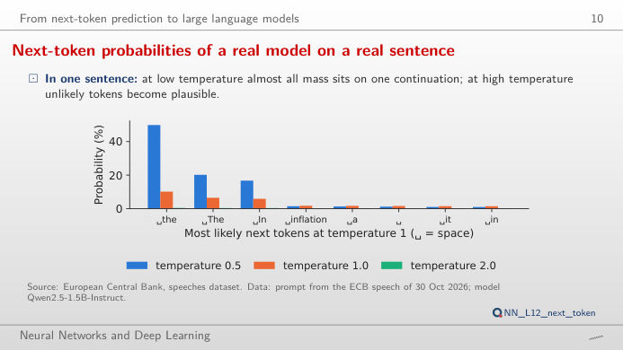
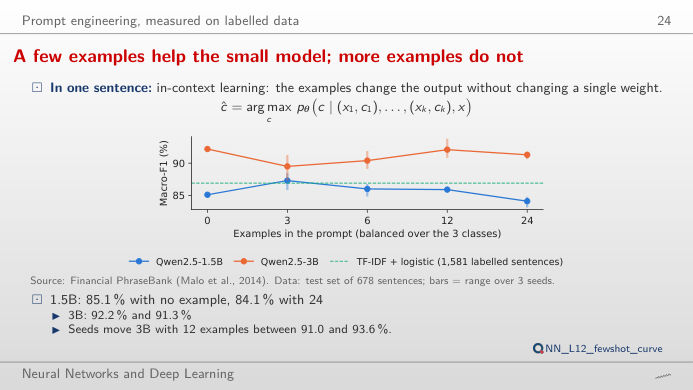
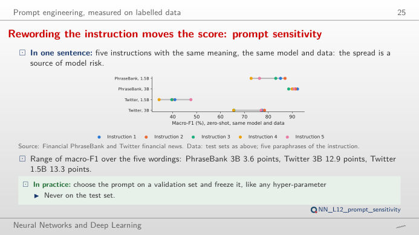
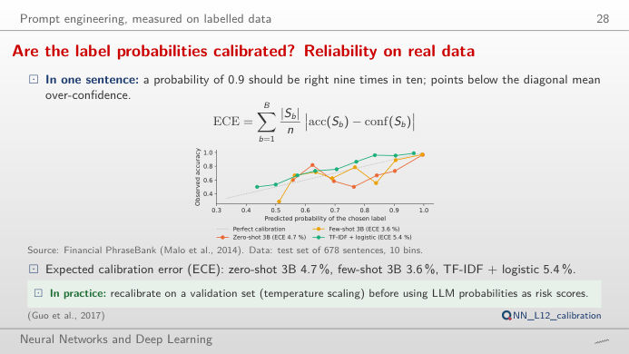
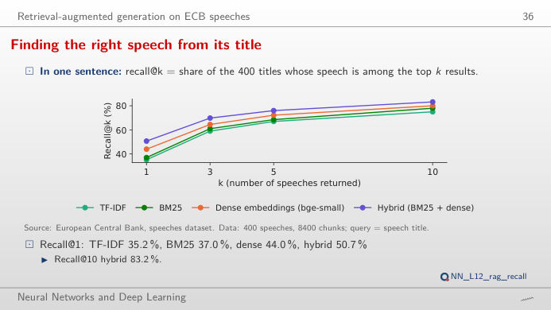
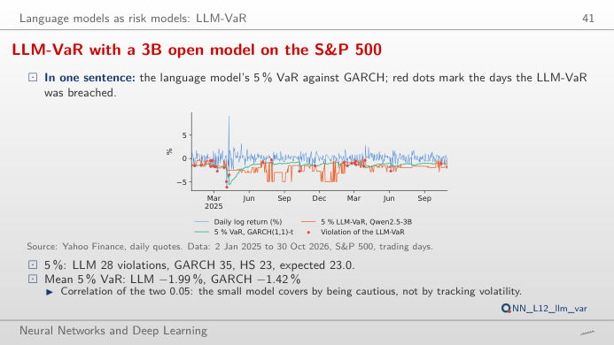

The slide of the lecture is on the left, the same figure on the right, recomputed in your browser from the outputs of the open models run for the lecture (Qwen2.5 with 0.5, 1.5 and 3 billion parameters) when you move a control. Nothing is invented: every probability, label and Value-at-Risk (VaR) estimate below was produced by the models on real data. The ▶ button moves the main parameter step by step. Under each figure: a readout, a question for the room and the Quantlet with the code of the chart.
How a language model writes: the next token · Prompt engineering, measured · Retrieval-augmented generation (RAG) · A language model as a risk estimator (LLM-VaR)
How a language model writes: the next token
Next-token probabilities of a real model on a real sentence

Answer
Dividing the logits by T sharpens the distribution when T < 1 and flattens it when T > 1. Over the whole vocabulary of 151,665 tokens the lecture measures 49.9% for “the” at T = 0.5 and only 0.4% at T = 2; the entropy rises from 1.74 to 6.20 and 10.29 nats. The chart renormalises over the k most likely tokens, as top-k sampling does: with k = 1 the model always writes “the” (greedy decoding). The word actually spoken, “prices”, is not among the eight most likely tokens. For classification and extraction use T = 0; high temperatures are for brainstorming.
Prompt engineering, measured
A few examples help the small model; more examples do not

Answer
No. Zero-shot, Qwen2.5-3B reaches a macro-F1 of 92.2%; with k = 1, 2, 4 and 8 examples the mean over three random draws of examples is 89.5%, 90.4%, 92.1% and 91.3%, and with k = 1 the draws range from 87.5% to 91.1%. The smaller 1.5B model gains a little at k = 1 (85.1% → 87.3%) and loses at k = 8 (84.1%). Which examples you draw matters about as much as how many. Macro-F1 averages the F1 score (harmonic mean of precision and recall) of the three classes, so the rare negative class counts as much as the neutral one.
Rewording the instruction moves the score: prompt sensitivity

Answer
A lot for the smaller model: on Financial PhraseBank, Qwen2.5-1.5B ranges from 72.8% to 87.0% (14.2 points) across the five wordings, Qwen2.5-3B only from 88.5% to 92.2% (3.6 points). On finance tweets both are fragile: 34.3–47.6% for 1.5B and 65.5–78.4% for 3B. The confusion matrix shows where the errors go; a reported LLM score is a score for one prompt, so test several wordings and report the range.
Are the label probabilities calibrated? Reliability on real data

Answer
Yes: move the threshold and watch coverage fall while accuracy on the answered sentences rises. This works only if the probabilities are calibrated, that is, if “90% sure” is right about 90% of the time. The lecture measures the expected calibration error (ECE) on Financial PhraseBank: 4.7% for zero-shot 3B, 3.6% for few-shot 3B and 5.4% for TF-IDF (term frequency–inverse document frequency) with logistic regression. Compare the 0.5B model: its reliability curve is far from the diagonal, and a threshold buys much less.
Retrieval-augmented generation (RAG)
Finding the right speech from its title

Answer
The hybrid one. Recall@1 is 35.2% for TF-IDF, 37.0% for BM25 (Best Matching 25, a keyword score), 44.0% for dense embeddings and 50.7% for the hybrid that fuses BM25 and dense ranks; at k = 10 the four reach 75.0%, 78.0%, 80.0% and 83.2%. Keywords and meaning fail on different queries, so combining them helps. With retrieval, the 3B model answers “who gave this speech?” correctly for 81.2% of 160 recent speeches, against 13.8% from its own memory.
A language model as a risk estimator (LLM-VaR)
LLM-VaR with a 3B open model on the S&P 500

Answer
At 5% the LLM-VaR has 28 violations (6.1%, Kupiec p = 0.295), historical simulation 23 (5.01%, p = 0.991) and GARCH(1,1) with Student-t errors 35 (7.63%, p = 0.016, rejected at 5%). At 1% the counts are 4, 6 and 9 for an expected 4.6. The Kupiec test asks whether the share of violations equals the VaR level; a p-value below 0.05 rejects the model. The LLM passes the count test, but its VaR barely reacts to volatility (correlation with GARCH 0.05): move the start of the period and see where its violations cluster.
Next token and RAG: speeches of the European Central Bank (ECB), 2022–2026. Sentiment: Financial PhraseBank (Malo et al., 2014; sentences with 100% annotator agreement, test set of 678) and Twitter financial news (Zeroshot, test sample of 900 tweets). Models: Qwen2.5-Instruct (Alibaba), run locally; label probabilities = probability mass of the first token of each label. LLM-VaR: daily log returns of the S&P 500 index, 2 January 2025 to 30 October 2026, window of 250 days, after Pele et al. (2026).